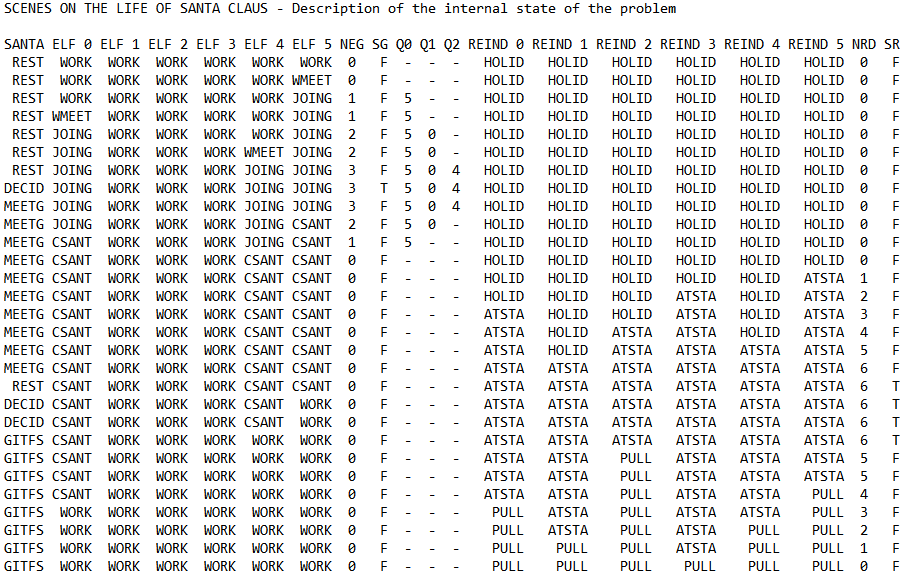

The main goal of this project, Santa Claus Problem is to have a multi-thread apllication running on several independent systems. The Santa Claus Problem it is a thread synchronization computer programming problem and it is solve using semaphores and mutexes.
The following will explain firstly the active indentities (Threads), Santa, Gnomes and Reindeers lifecycles.
The threads presented before must act on data structures which in turn are avaiable on a share memory, presented below.
The syncronization mecanism in place is through semaphores.
The next image presents a log example produced after execution.

Local implementation as a standalone Netbeans project can be found on my >GitHub repository.
Next sections presents the same problem but implemented in a distributed envoriment with Remote Method Invocation (RMI) architecture.